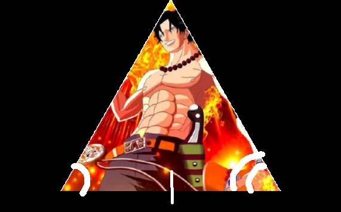

Here is Awesome Swordsman Ace:

Awesome Swordsman Ace is a man who is gifted with the ability to handle a sword in ways
you would think are impossible. Besides the fact that he is an amazing swordsman, he is a very funny
guy
who doesn't always act the brightest. He will always make your day because of the silly dances and
faces
he does. He is looking for triangles that has two congruent angle pairs with a congruent side in the
middle
of those two angles.